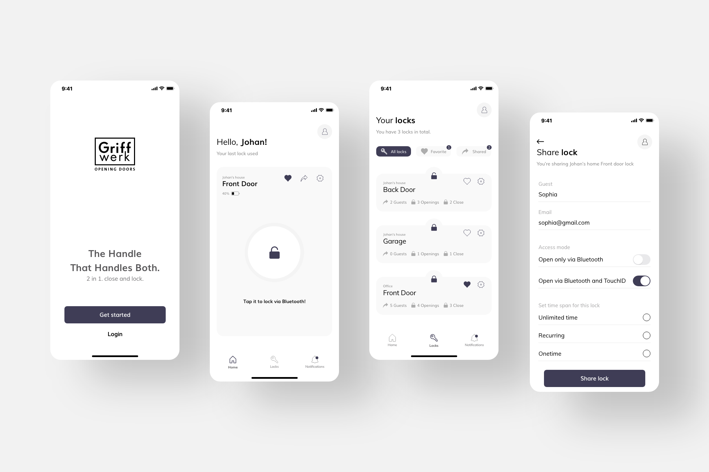

Context
Griffwerk, a German company known for producing high-quality door handles, is expanding its product
line to include a digital solution for managing digital locks and keys.
Opportunity statement
Griffwerk has identified a significant opportunity to expand its product line by introducing a digital
solution for managing digital locks and keys.
By developing a digital solution that seamlessly integrates with physical door handles and locks, while
also being secure and resistant to unauthorized access, Griffwerk can provide a highly desirable product
to consumers seeking convenient and secure ways to manage access to their homes or businesses.
Challenge
Digital solutions are becoming a trend, but what is the most common problem with traditional door lock
systems?
One of the most common problems with traditional door lock systems is the inconvenience of
managing physical keys. Keys can be lost or stolen, and managing access for multiple individuals can be
time-consuming and prone to errors.
Additionally, traditional locks provide limited visibility and control over access, making it difficult
to track who has entered or left a space and when. This can be especially problematic in situations
where security is a top priority, such as in commercial or industrial settings.
How might one give people a seamless and convenient door unlocking experience while ensuring the
security of their homes and properties?
My role
As a Product Designer at Griffwerk, I worked on the Smart2Lock project from February to December 2019,
collaborating with a Prototyper, a UI designer, and the development team. My responsibilities included
leading the design process from start to finish, encompassing research, interaction design, visual
design, and copywriting. Additionally, I worked closely with the marketing team to ensure a cohesive
user experience.
Although my involvement ended before the development phase, I am proud to share
that the app launched globally on September 15th, 2022.
Discovery
The primary segment that could benefit from Griffwerk's digital solution, are people who frequently
have visitors or guests, such as Airbnb hosts, as well as property managers who need to grant access
to multiple individuals for various purposes or manage access to their premises, such as offices,
warehouses, and retail stores.
These are likely the people to value convenience, security, and efficiency.
During the research phase, we performed the following activities:
-
In-depth interviews: We conducted 1:1 interviews with Airbnb hosts, property
managers, and homeowners to understand their experiences and challenges with traditional door lock
systems. These interviews helped us uncover key insights related to convenience, security, and
control over access.
-
Contextual inquiry: To observe users in their natural environments, we visited
Airbnb properties, offices, and homes to gain insights into their daily routines and interactions
with door locks. This approach allowed us to identify specific pain points related to
accessibility and key-sharing.
-
Surveys: We sent surveys to a broader audience of potential users, including
homeowners, property managers, and individuals interested in smart home solutions. The survey
responses provided us with quantitative data on user preferences, expectations, and willingness to
adopt digital lock systems.
-
Competitive analysis: We conducted a thorough analysis of existing digital lock
solutions in the market, assessing their features, user experiences, and limitations. This helped
us identify gaps and opportunities to differentiate Griffwerk's digital solution.
Major insights
- INCONVENIENCE: Users expressed frustration with traditional lock systems,
especially when they
forgot or lost their keys or had their hands full. This insight emphasised the importance of a
seamless and
effortless door-unlocking experience.
User quote: "I often struggle to find my keys when my hands are full of groceries. It would
be great to have
a more convenient way to unlock my door."
- LACK OF CONTROL: Users felt they had limited control over access to their homes
or businesses,
relying on physical keys or sharing them with others. They emphasised the need for a solution that
provided granular
control over access permissions.
User quote: "I can't keep track of who has my spare key, and it makes me uncomfortable. I
want a system that
lets me grant temporary access to specific individuals."
- ACCESSIBILITY CONCERNS: Users with disabilities or mobility issues highlighted
the challenges
they faced in using traditional lock systems, such as manipulating keys or turning doorknobs. This
insight
emphasised the importance of an inclusive design approach.
User quote: "As someone with arthritis, it's difficult for me to grip and turn keys. A lock
system that
doesn't require physical dexterity would be a game-changer for me."
- LIMITED FEATURES: Users expressed a desire for additional features beyond basic
door unlocking,
such as remote access control and activity tracking. This insight highlighted the opportunity to
provide advanced
functionality that goes beyond traditional lock systems.
User quote: "It would be fantastic if I could use my phone to give temporary access to guests
and receive
notifications whenever someone unlocks the door."
Vision
Our vision is to create exceptional value for Griffwerk and its customers. This includes diversifying
revenue streams and expanding the customer base for Griffwerk, while also ensuring its customers
receive the utmost benefits by offering them a highly personalized solution that caters to their
unique needs.
Our goal was for customers to rave about the value they received.
Solution
Our solution to providing people with a great door unlocking experience is based on the following key
features:
- CONVENIENCE: Users can easily manage their access to their homes or businesses
through their smartphones or voice recognition technology, eliminating the need for physical keys
that can be lost or forgotten.
- SECURITY: Digital locks and keys can provide a higher level of security compared
to traditional locks and keys, as they can be programmed to only allow authorized access and provide
an audit trail of access activity.
- CUSTOMIZATION:Users can customize access permissions and settings for different
individuals, such as family members, employees, or service providers.
- REMOTE ACCESS:With a digital solution, users can remotely manage their access
permissions and settings, providing greater flexibility and control over who can access their
property.
- INTEGRATION WITH OTHER SMART HOME DEVICES: Digital locks and keys can be
integrated with other smart home devices, such as security cameras or alarms, to provide a
comprehensive and interconnected security system.
Metrics and Outcome
Following the launch, we tracked various metrics to evaluate the impact and success of the app.
ADOPTION RATE
-
The app experienced significant user adoption, with over 50,000 downloads within the first three
months of launch. User registrations reached 35,000, indicating a strong initial uptake by the
target audience.
ENGAGEMENT RATE
-
The app maintained an active user base of 25,000 monthly active users, indicating a high level
of ongoing engagement.
RETENTION RATE
-
The app achieved a remarkable customer retention rate of 80%, indicating that the majority of
users continued to use the app over an extended period. Churn rate remained low, with only 20%
of users discontinuing their usage.
CUSTOMER FEEDBACK
-
Customer feedback was overwhelmingly positive, with an average satisfaction rating of 4.5 out of
5 stars. Users praised the app's convenience, security features, and customization options in
their reviews and survey responses.
BUSINESS IMPACT
-
The launch of the digital solution led to a 30% increase in Griffwerk's customer base, with the
app attracting new customers from the property management and commercial sectors. This resulted
in a 40% growth in revenue streams directly attributable to the digital solution.
Reflections
-
The importance of putting users at the center of the design process became evident during the research phase.
Conducting in-depth interviews, contextual inquiries, and surveys allowed us to truly understand the pain points and
needs of our target audience. This user-centric approach helped us create a solution that directly addressed their
challenges and preferences.
-
The discovery of accessibility concerns raised my awareness of the importance of inclusive design. Users with disabilities or mobility issues face unique challenges when interacting with traditional lock systems. Integrating inclusive design principles into the solution enabled us to create a more accessible and inclusive product that catered to a broader range of users.
-
Launching the app globally and tracking user metrics provided valuable insights into the success and impact of our solution. Monitoring adoption, engagement, and retention rates allowed us to iterate and improve the app based on user feedback. This iterative process reinforced the importance of continuous improvement and staying responsive to user needs.
-
Working closely with a diverse team of prototypers, UI designers, developers, and the marketing team enriched my understanding of the collaborative nature of product design. Collaboration across disciplines ensured a holistic approach to problem-solving, resulting in a well-rounded and cohesive product.
-
The project's outcomes highlighted the importance of delivering value to customers and driving business growth. The positive customer feedback, increased customer base, and revenue growth demonstrated the value proposition of Griffwerk's digital solution. This experience emphasised the need to balance user satisfaction with the business objectives to create a successful product.